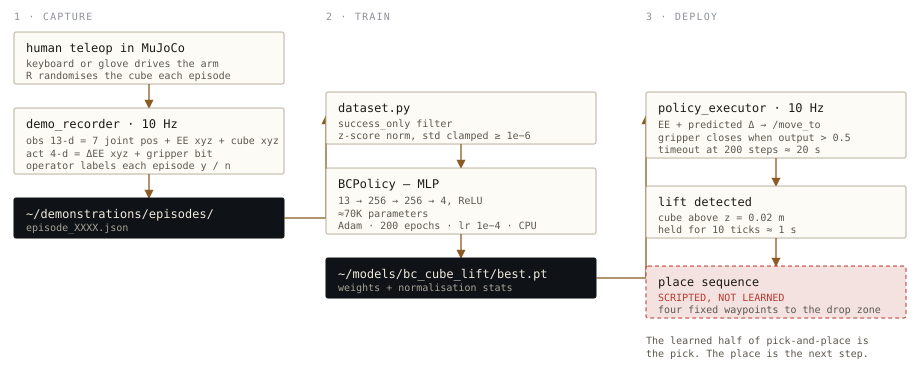

Teach it by doing it.
Every other part of this project exists so that a human can drive the arm well. This part exists so that driving it well produces training data.
Status: the pipeline is built end to end — recorder, dataset, network, trainer, and the runtime that executes a policy in the loop — and it runs. No demonstration set has been recorded yet and no checkpoint has been trained, so there are no success rates to report here, and none are claimed. What follows describes the machinery and the reasoning behind it.

The task
Lift a randomly-placed cube off the table. It is deliberately modest. The cube spawns anywhere in a ±5 cm by 12 cm patch, so the policy cannot memorise a single trajectory, but the goal is a single clean skill — reach, grasp, lift — rather than a long-horizon plan.
What the policy sees and what it says
Observation · 13 dimensions
- 7 joint positions — four arm joints, the wrist, and both fingers
- 3 end-effector coordinates, from the TF tree
- 3 cube coordinates, from the MuJoCo plugin
Action · 4 dimensions
- Change in end-effector X, Y and Z since the last tick
- One gripper bit — open or closed
The action is a delta, not a target, and that choice does most of the work. A policy predicting absolute positions has to learn the entire coordinate system before it can be useful, and every prediction is wrong in a way that compounds with distance. A policy predicting "move two millimetres closer" only has to learn a direction, which generalises across the whole workspace: the same output is correct whether the cube is left or right, because the relationship between the observation and the correction is the same. It also keeps the outputs small and similarly scaled, which is exactly what a mean-squared-error loss wants.
The observation is state, not pixels. The cube's position comes from the simulator rather than a camera. That is a real limitation — the policy cannot transfer to the physical arm without a perception front-end — but it makes the learning problem tractable in the amount of data a human can produce by hand, and it isolates the control problem from the vision problem so they can be solved separately.
Recording
demo_recorder samples the observation and computes the action at 10 Hz
while a human teleoperates, and writes each episode to JSON. The loop is a terminal
UI with three keys, and it is designed around the assumption that a fair number of
attempts will fail.
R reset the sim, randomise the cube
Enter start recording · press again to stop
y / n label the episode a success or a failure
→ ~/demonstrations/episodes/episode_XXXX.json
That manual label is the most important field in the file. Behavioural cloning copies whatever it is shown, so a failed grasp in the training set is not neutral — it actively teaches the policy to fumble. The loader filters on the flag, which means an honest n is worth more than an optimistic y, and the cheapest way to ruin the dataset is to be generous when labelling.
Training
The model is small on purpose: two hidden layers of 256 units with ReLU between them, mapping thirteen numbers to four. About seventy thousand parameters, trained on CPU in well under a minute.
BCPolicy Linear(13 → 256) ReLU Linear(256 → 256) ReLU Linear(256 → 4) Adam · 200 epochs · batch 64 · lr 1e-4 · 90/10 split · MSE best-validation checkpoint → ~/models/bc_cube_lift/best.pt
A few thousand timesteps from a few dozen demonstrations is a tiny dataset, and a larger network would simply memorise it. The bigger benefit of keeping training down to seconds is that the loop stops being "train a model" and becomes "run it, watch where it fails, record twenty more demonstrations of that specific failure, retrain." Data quality is the bottleneck, not compute, so the pipeline is built to make iterating on data cheap.
Observations and actions are z-score normalised, with the standard deviation clamped at 1e−6 so a dimension that never varies cannot divide by zero. The normalisation statistics are saved inside the checkpoint alongside the weights — a small thing that prevents a nasty class of bug, where a model is loaded later against differently-scaled inputs and silently produces garbage.
Deployment
policy_executor closes the loop. At 10 Hz — the same rate the
demonstrations were recorded at, so the policy sees the timing it was trained on —
it reads the observation, adds the predicted delta to the current end-effector
position, and publishes the result to /move_to. From there it is
indistinguishable from a human driving the arm, which is precisely the point: the
policy is just a fourth kind of driver on the same topic.
| rate | 10 Hz, matching the recording rate |
| gripper | closes when the fourth output exceeds 0.5 |
| lift test | cube above z = 0.02 m, held for 10 consecutive ticks (~1 s) |
| timeout | 200 steps, about 20 seconds, then the episode is abandoned |
Requiring the lift to hold for a full second rather than firing on the first frame above the threshold is a small piece of defensive design: it rejects the case where the gripper knocks the cube upward without actually holding it.
What is learned and what is not
Once a lift is confirmed, the arm runs four hardcoded waypoints to carry the cube to a fixed drop zone and release it. That half is scripted, not learned, and it is worth being blunt about it: the policy solves the pick, and the place is a loop that could have been written before any of this existed.
That was a scoping decision rather than an oversight. The pick is the part that depends on where the cube happens to be, so it is the part that needs to be learned; the place always ends in the same location and gains nothing from a network. Extending the policy to cover the place — a longer horizon and a second success criterion — is the obvious next increment.
Running it
1 · record 30–50 successful lifts, ~15–30 s each ros2 launch arm_bringup mujoco_mirror.launch.py dry_run:=true terminal 1 ros2 run moveit_controls demo_recorder terminal 2 2 · train python3 -m moveit_controls.il.train python3 -m moveit_controls.il.train --epochs 300 --lr 3e-4 if loss stalls 3 · deploy ros2 launch arm_bringup policy_eval.launch.py sim only ros2 launch arm_bringup policy_eval.launch.py dry_run:=false + real arm
Twenty demonstrations is enough to see whether the setup works at all; fifty is the point at which results are worth reporting. The full guide, including the troubleshooting steps for a loss that refuses to fall, is in the training document.
What comes next
- Record and train. Everything above is untested against real data. The first honest number this project can publish is a success rate over a held-out set of cube positions.
- Learn the place. Replace the scripted waypoints with a longer-horizon policy.
- Close the perception gap. The cube position comes from the simulator. A RealSense and the existing detector could supply it instead, which is what real-hardware deployment would require.
- Retire the orphaned recorder. An older
record_demo.launch.pypath writes rosbags that nothing currently consumes. It should either feed the trainer or be deleted — two capture mechanisms where one is dead is a trap for the next person reading the repo.